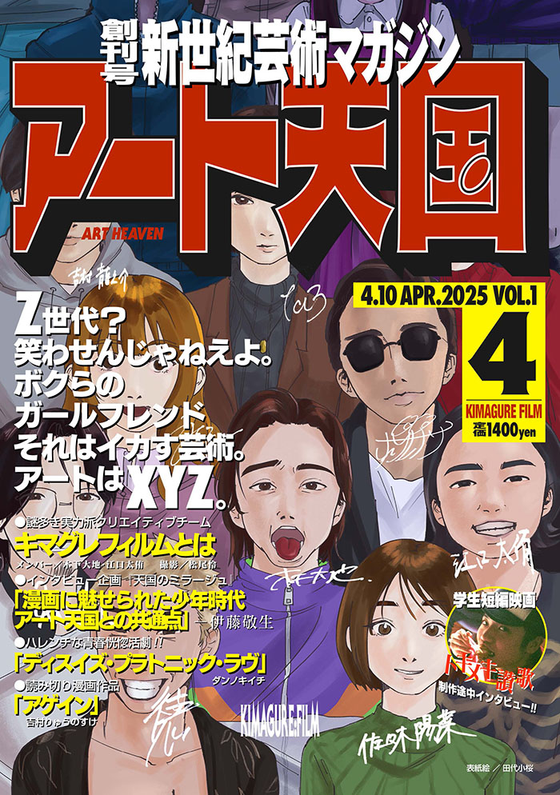

アート天国
芸術マガジン「アート天国」を編集人として制作しています。また、デッサンやグラフィックを掲載しています。
創刊号である4月号では、グラフィックとデッサンを掲載しました。編集人として、ページの校正などを行いました。

クライアント
---
担当した作業
雑誌編集、デッサン・グラフィック制作
制作期間
2024.12.6 -
使用したソフトなど
Adobe Illustrator
注意・工夫した点
グラフィックの「寿司」では、色の境目で寿司という文字が浮かび上がるようなグラフィックを目指して制作しました。
猫のグラフィックでは、色数をなるべく制限して制作してみました。
課題
デッサンは高校生の頃に自主的に美術の先生に教わって以来の挑戦だったため、集中力が続かず、以前より上手く描けませんでした。今後は日常的に練習を重ねていきたいと思います。
グラフィックの「寿司」は、色の境目で寿司という文字が浮かび上がるように制作したつもりでしたが、実際に意図が伝わったのは一部の人だけで、多くの人にはただの寿司のグラフィックとして受け取られてしまいました。見る人に伝わらなければ意味がないと感じたため、また挑戦したいと思います。